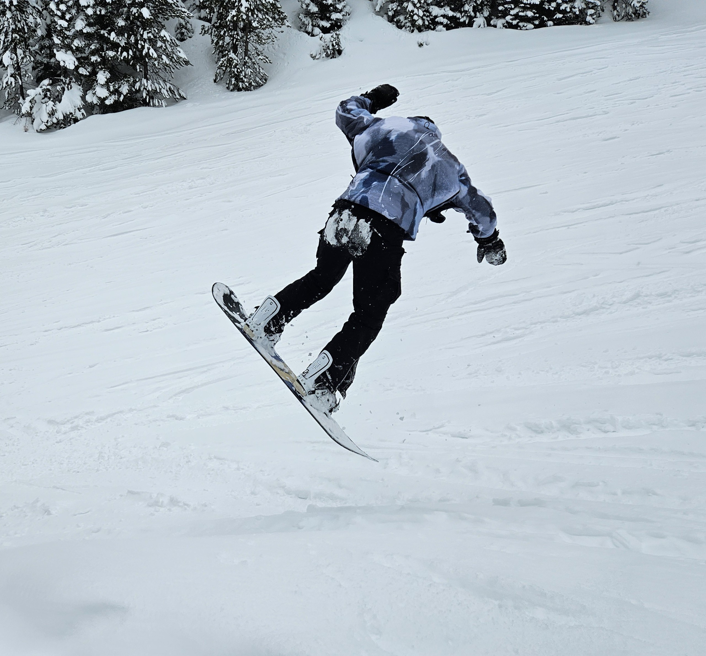
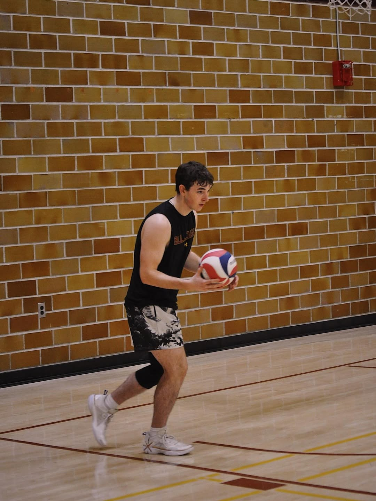
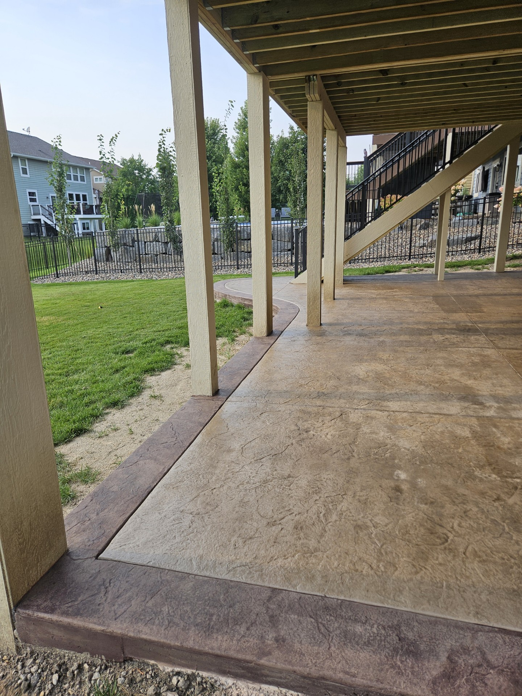
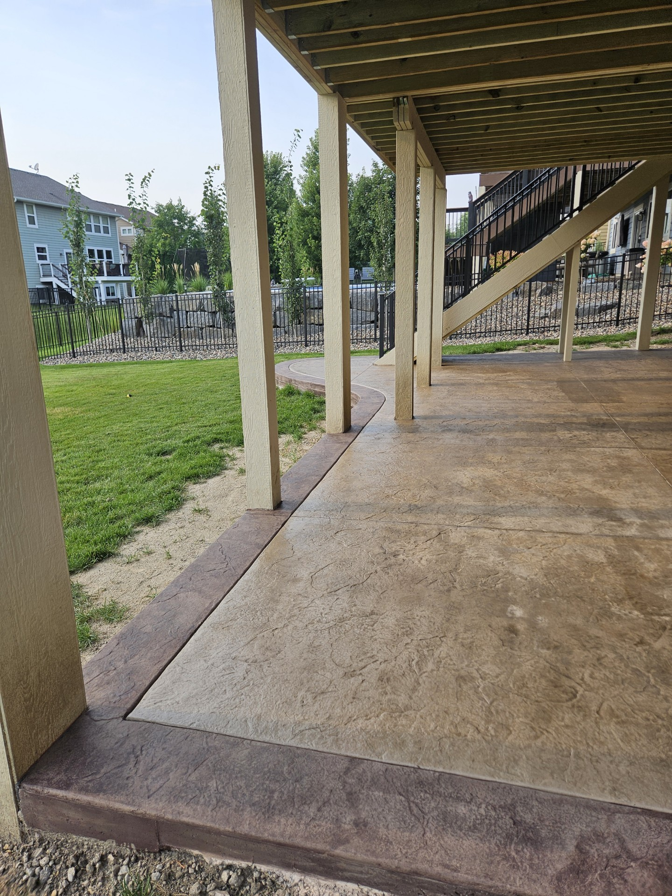

My Hobbies & Activities
Snowboarding
The sport that rules the winter environment. Snowboarding is one of my favorite hobbies and my longest going sport since beginning at the age of nine. For years I have been going to the slopes around Minnesota experiencing the thrill and freedom that Snowboarding has to offer. Going to places such as Buck Hill, Giants Ridge, Welch Village, and Lutsen Mountain just to name a few. Snowboarding introduces an important skill in controlling the rotation of the body and balancing at high speeds. This winter hobby is a great way to work on coordination, creativity, and control. Not to mention, there are plenty of other people on the slopes and the lifts to meet a variety of people. You never know who you might meet each day.
One of the coolest moments in my snowboarding career was my first run on Bridger Mountain in Montana. With fresh powder right in the morning the first tracks felt like floating on clouds, cushions that let you glide across the slopes. It was one of the most surreal moments of my life and I continue to look forward to a day where I can experience such a feeling again.
Volleyball
A team sport requiring a multitude of different skills from jumping techniques, to hitting, to blocking, to receiving, to passing, and to communication. Volleyball brings the best out of everybody to collaborate and work harder. It's hard to list every skill this sport trains but there's a broad list. Whether it's communication, technique, awareness, or footwork, volleyball challenges each aspect to make volleyball both enjoyable and complex. It's a largely growing sport in boys/men's sports and it continues to welcome new players at an alarming rate.
One of my favorite memories back in high school was when our team was down two sets out of five losing in the third set. On a game winning point, our team made an outstanding save that tied the match and gave us the opportunity to turn the tides and win that set. This play along with the leadership and communication I took with my team allowed us to win our section game and knock somebody out of playoffs. It was truly thrilling to have the whole bench run on to the court and celebrate such a unifying and exciting moment.
Concrete
 

A unique occupation that requires both precision and strength. This activity has become both a job and a passion as I expand my skills by learning decades of techniques from my father and the business he continues to manage. Concrete itself is a physically demanding activity and can challenge limits in muscular endurance, strength, and explosivity. Whether you run a wheelbarrow full of gravel/concrete, run the pump, or shovel out the dirt in preparation, most concrete becomes a test of strength especially when, during peak summer months, the heat index and humidity are above 80 degrees Fahrenheit. Apart from strength, concrete also tests precision from start to finish. If you want to have a successful job you need to be precise in your forming, measurements, size, grading, filling, cutting, and finishing.
What's significant about these two photos is that, between this before and after there was a conveniently timed downpour that forced us to scrap the job for the day. With a concrete pump and the concrete truck prepped and ready we lost thousands on the job site due to weather that wasn't accurately depicted on the forecast. Regardless, we got back to the job site that week and completed the patio.